Soru 1Cevap: D
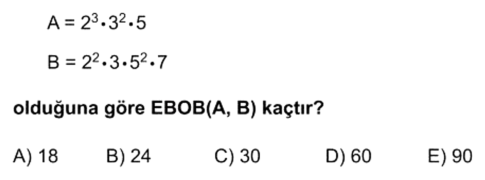
Çözüm
- EBOB: ortak asalların küçük üslüleri.
- $2^2$, $3^1$, $5^1$ ortak; 7 ortak değil.
- $2^2\cdot3\cdot5=60$ → D.
Cevap: D
Soru 2Cevap: D
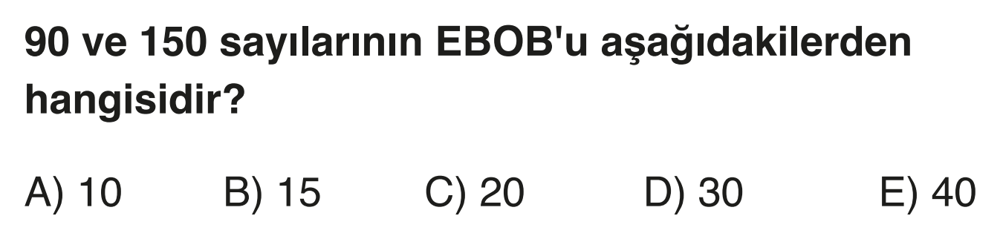
Çözüm
- $90=2\cdot3^2\cdot5$, $150=2\cdot3\cdot5^2$.
- Ortak asalların küçük üslüleri: $2\cdot3\cdot5$.
- $\text{EBOB}=30$ → D.
Cevap: D
Soru 3Cevap: E
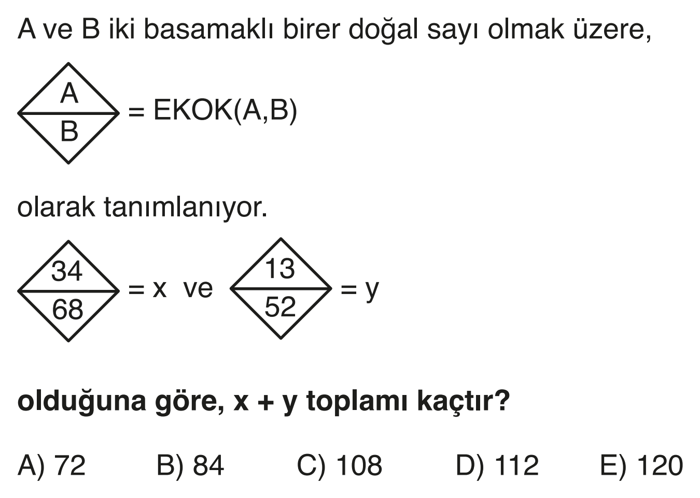
Çözüm
- Şekil iki sayının EKOK'unu verir.
- $x=\text{EKOK}(34,68)=68$; $y=\text{EKOK}(13,52)=52$.
- $x+y=120$ → E.
Cevap: E
Soru 4Cevap: B
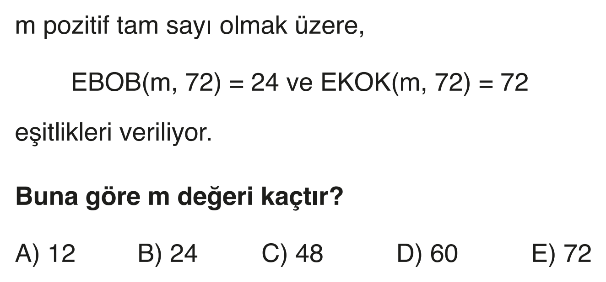
Çözüm
- $m\cdot72=24\cdot72$.
- $m=24$.
- Kontrol: $\text{EBOB}(24,72)=24$, $\text{EKOK}=72$ ✓ → B.
Cevap: B
Soru 5Cevap: D
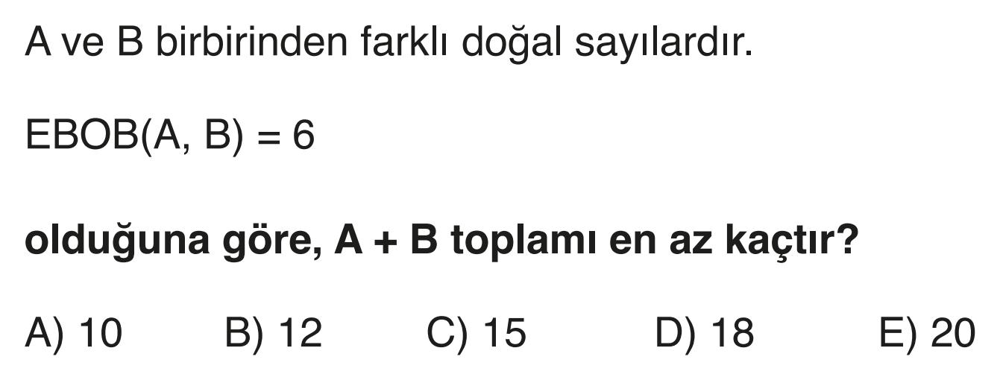
Çözüm
- $A=6a$, $B=6b$, $a\ne b$ aralarında asal.
- En küçük $a=1$, $b=2$: $6$ ve $12$.
- $A+B=18$ → D.
Cevap: D
Soru 6Cevap: B
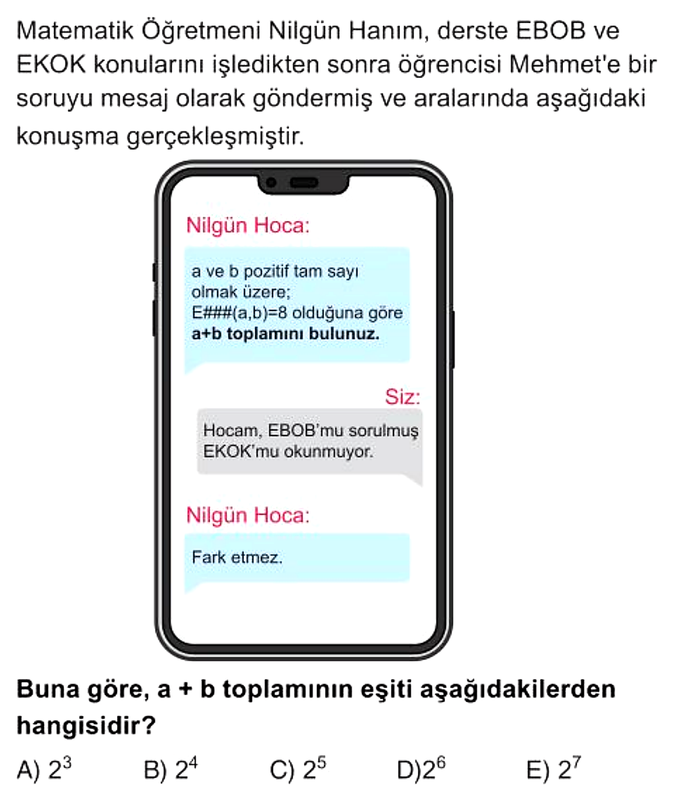
Çözüm
- Hem $\text{EBOB}(a,b)=8$ hem $\text{EKOK}(a,b)=8$ olabilmesi için ($\text{EBOB}\le a,b\le\text{EKOK}$) $a=b=8$.
- $a+b=16$.
- $16=2^4$ → B.
Cevap: B
Soru 7Cevap: C
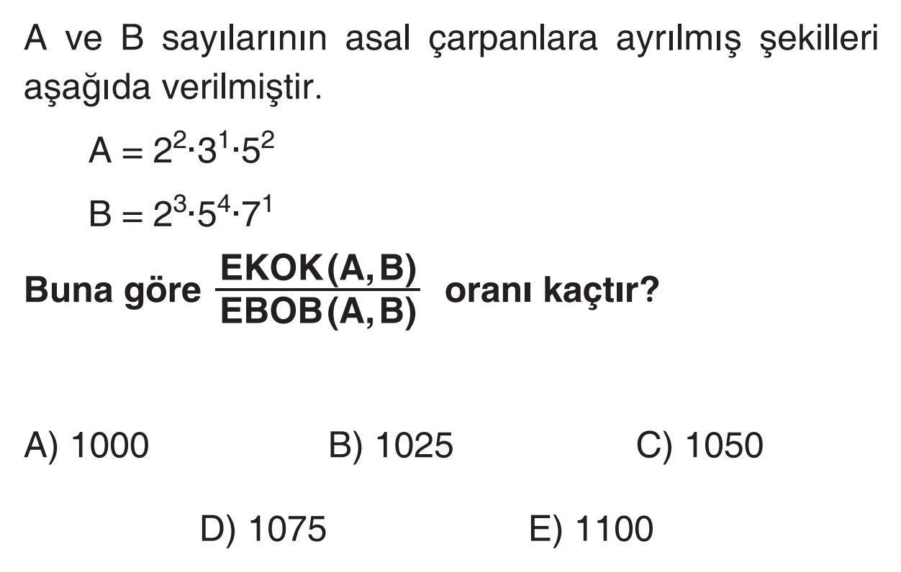
Çözüm
- $\text{EBOB}=2^2\cdot5^2=100$.
- $\text{EKOK}=2^3\cdot3\cdot5^4\cdot7=105\,000$.
- Oran $1050$ → C.
Cevap: C
Soru 8Cevap: D
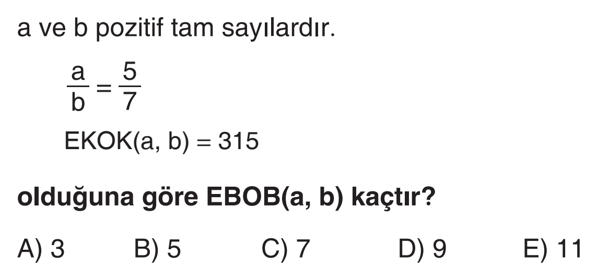
Çözüm
- $a=5k$, $b=7k$ ($5$ ile $7$ aralarında asal) → $\text{EBOB}=k$.
- $\text{EKOK}=35k=315 \Rightarrow k=9$.
- $\text{EBOB}=9$ → D.
Cevap: D
Soru 9Cevap: E
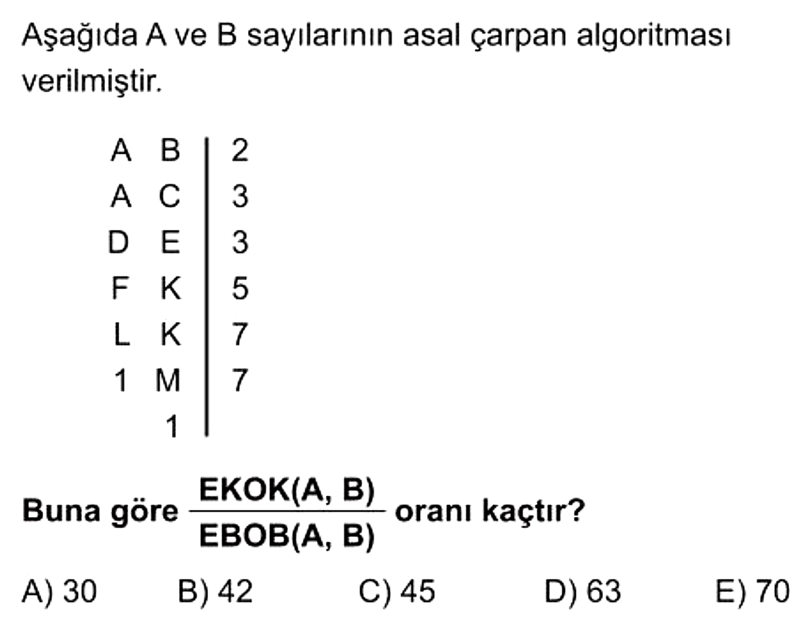
Çözüm
- Algoritmadan $A=3^2\cdot5\cdot7=315$, $B=2\cdot3^2\cdot7^2=882$.
- $\text{EBOB}=3^2\cdot7=63$, $\text{EKOK}=2\cdot3^2\cdot5\cdot7^2=4410$.
- $\frac{4410}{63}=70$ → E.
Cevap: E
Soru 10Cevap: B
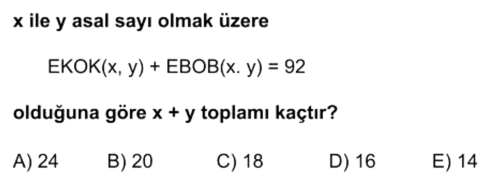
Çözüm
- $x\ne y$ asal ise $\text{EBOB}=1$, $\text{EKOK}=xy$: $xy+1=92 \Rightarrow xy=91=7\cdot13$.
- $x=y$ olsaydı $2x=92 \Rightarrow x=46$ asal değil.
- $x+y=20$ → B.
Cevap: B
Soru 11Cevap: E
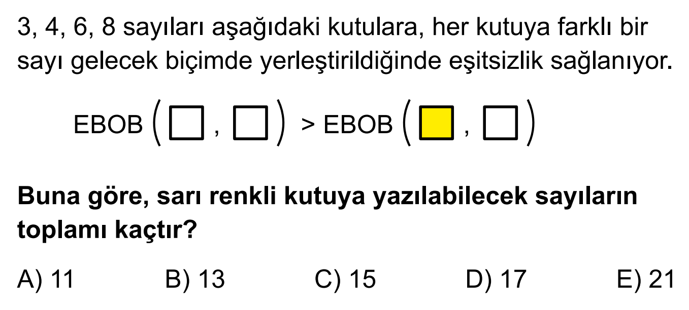
Çözüm
- İkili EBOB'lar: $(3,4)=1$, $(3,6)=3$, $(3,8)=1$, $(4,6)=2$, $(4,8)=4$, $(6,8)=2$.
- Eşitsizliği sağlayan bölüşümler: $\{6,8\}>\{3,4\}$, $\{4,8\}>\{3,6\}$, $\{4,6\}>\{3,8\}$ → sarı kutu sağdaki ikilinin elemanı.
- Sarıya yazılabilenler $3,4,6,8$ → $21$ → E.
Cevap: E
Soru 12Cevap: D
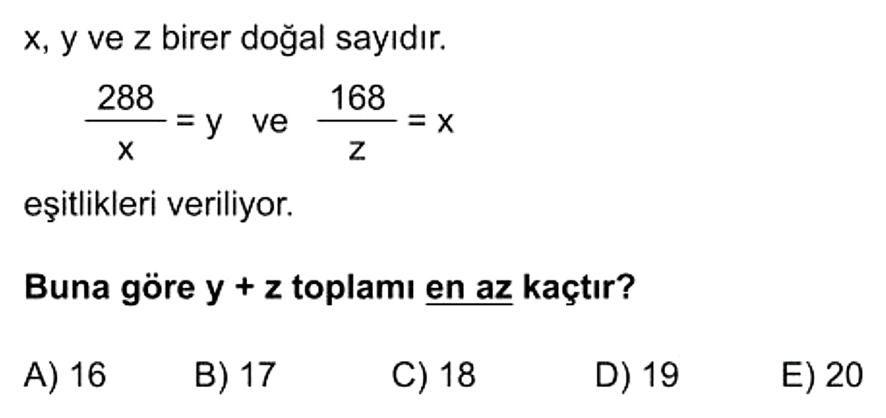
Çözüm
- $x$ hem $288$'in hem $168$'in böleni.
- $y+z=\frac{288}x+\frac{168}x=\frac{456}x$ en küçük → $x$ en büyük: $\text{EBOB}(288,168)=24$.
- $y+z=12+7=19$ → D.
Cevap: D
Soru 13Cevap: C
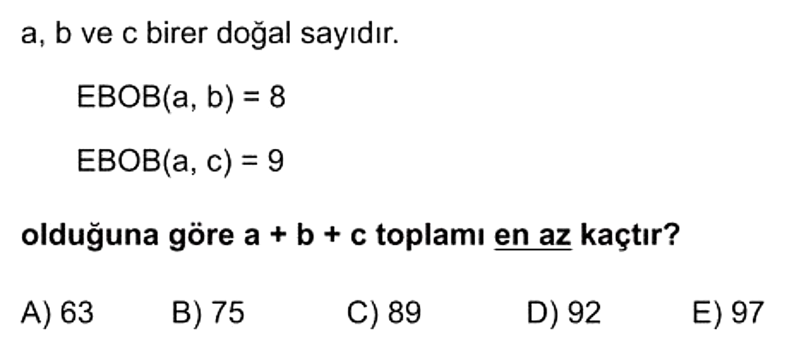
Çözüm
- $a$ hem 8'in hem 9'un katı → $a$, 72'nin katı; en küçük $a=72$.
- $\text{EBOB}(72,b)=8 \Rightarrow$ en küçük $b=8$; $\text{EBOB}(72,c)=9 \Rightarrow c=9$.
- $72+8+9=89$ → C.
Cevap: C
Soru 14Cevap: B
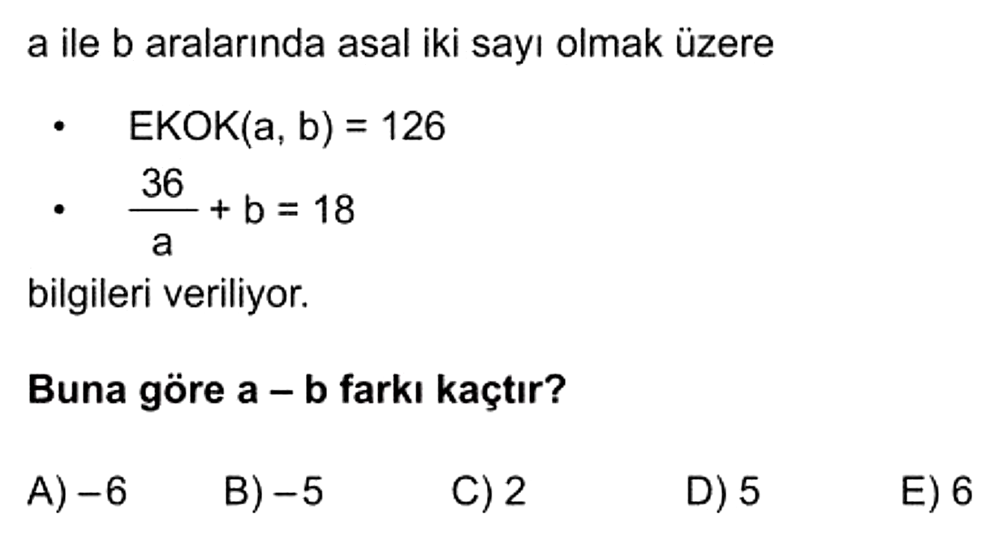
Çözüm
- Aralarında asal: $ab=126$.
- $\frac{36}a+b=18 \Rightarrow 36+ab=18a \Rightarrow 162=18a \Rightarrow a=9$, $b=14$.
- $a-b=-5$ → B.
Cevap: B
Soru 15Cevap: A
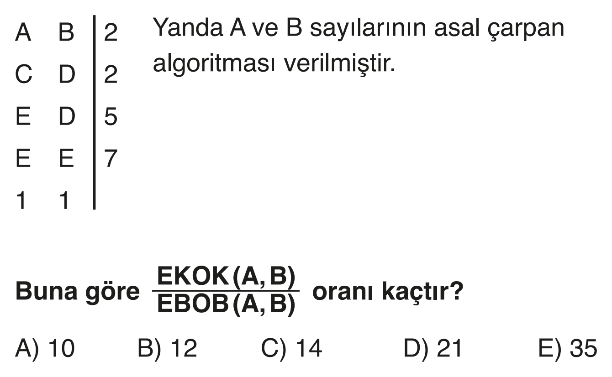
Çözüm
- Algoritmadan $A=2^2\cdot7=28$, $B=2\cdot5\cdot7=70$.
- $\text{EBOB}(28,70)=14$, $\text{EKOK}=140$.
- $\frac{140}{14}=10$ → A.
Cevap: A
Soru 16Cevap: E
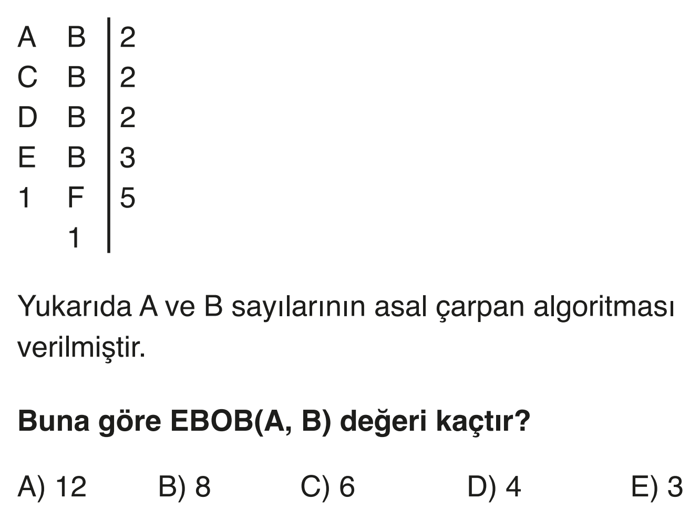
Çözüm
- Sol sütun: $A=2^3\cdot3=24$.
- Sağ sütun 2 ve 3'e bölünmeden iner, $3$'te $F$'ye, $5$'te $1$'e: $F=5$, $B=3\cdot5=15$.
- $\text{EBOB}(24,15)=3$ → E.
Cevap: E
Soru 17Cevap: B
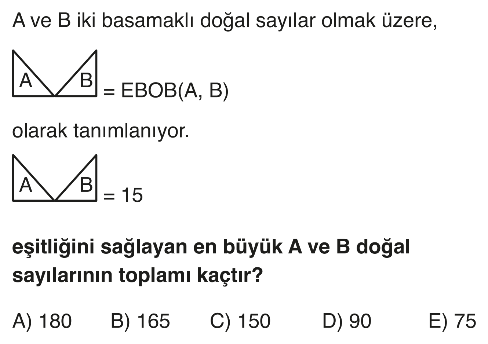
Çözüm
- $\text{EBOB}(A,B)=15$: iki basamaklı 15'in katları $15,30,45,60,75,90$.
- Toplam en büyük: $90$ ve $75$ ($\text{EBOB}=15$ ✓).
- $165$ → B.
Cevap: B
Soru 18Cevap: D
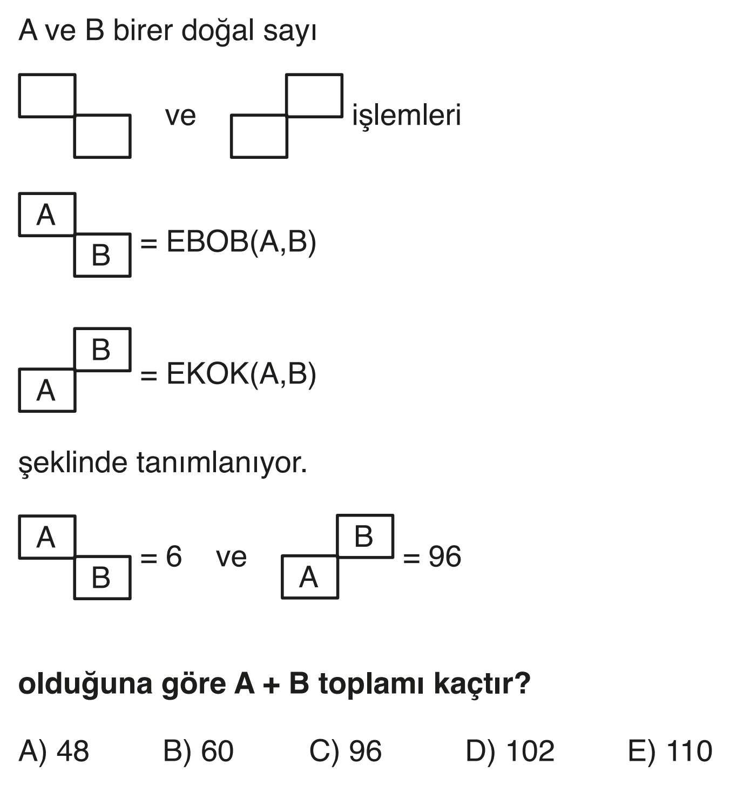
Çözüm
- $\text{EBOB}=6$, $\text{EKOK}=96$: $A=6a$, $B=6b$, $ab=16$, $a,b$ aralarında asal.
- $\{a,b\}=\{1,16\}$ → $A,B=6$ ve $96$.
- $A+B=102$ → D.
Cevap: D
Soru 19Cevap: A
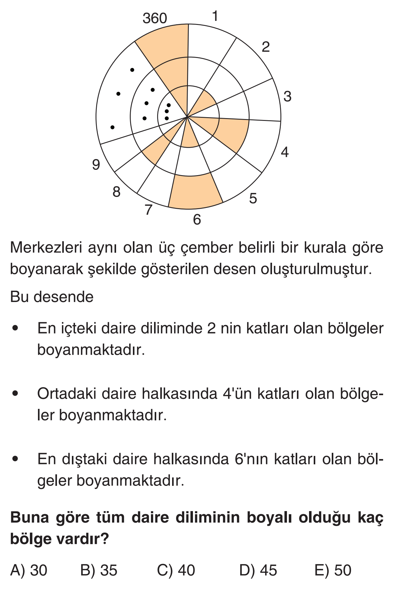
Çözüm
- Bir dilimin üç halkası birden boyalı → numara 2'nin, 4'ün ve 6'nın katı.
- $\text{EKOK}(2,4,6)=12$'nin katları.
- 360 dilimde $\frac{360}{12}=30$ → A.
Cevap: A
Soru 20Cevap: A
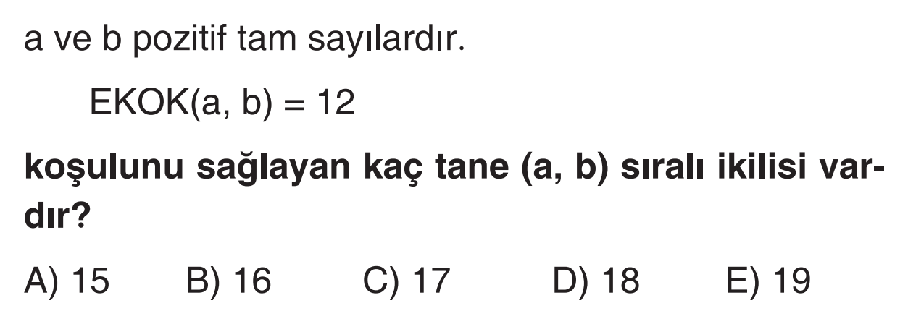
Çözüm
- $12=2^2\cdot3$; her asal için iki sayıdan en az birinin üssü EKOK'taki üsse eşit olmalı.
- $2^2$ için üs ikilileri: $(2,0),(2,1),(2,2),(0,2),(1,2)$ → 5; $3^1$ için $(1,0),(1,1),(0,1)$ → 3.
- $5\cdot3=15$ sıralı ikili → A.
Cevap: A